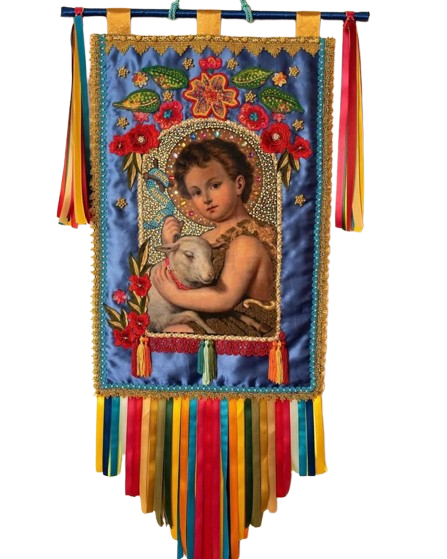

São João
É do Brasil!Cronograma Completo das Festividades
Organize-se para não perder nenhum detalhe da nossa celebração! A tabela abaixo detalha todas as atividades, horários e locais que farão parte do grande Arraiá.
| Horário | Atração / Atividade | Espaço / Local |
|---|---|---|
| 18:00h | Abertura oficial dos portões e início do serviço de comidas típicas. | Pátio das Palmeiras |
| 19:00h | Apresentação cultural da Quadrilha Infantil do colégio. | Arena Junina Central |
| 20:00h | Grande Quadrilha Maluca dos estudantes de Desenvolvimento Web (IFSP). | Arena Junina Central |
| 21:00h | Apresentação do grupo regional de Forró Pé de Serra com fogueira artificial. | Palco Principal |
| 22:30h | Premiação do melhor traje caipira e encerramento das festividades. | Palco Principal |